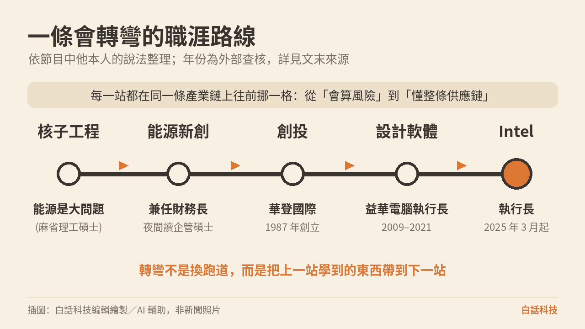
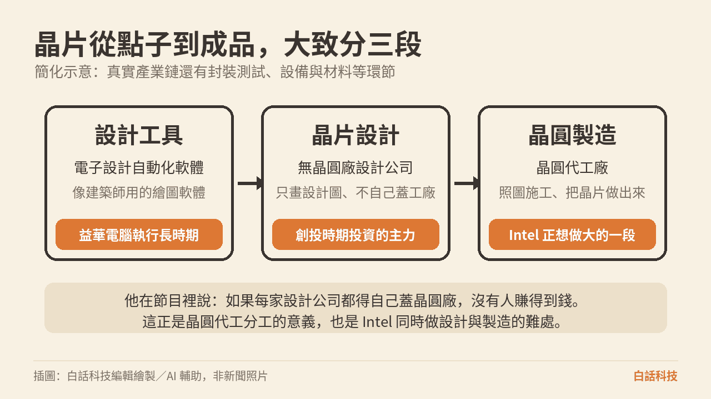
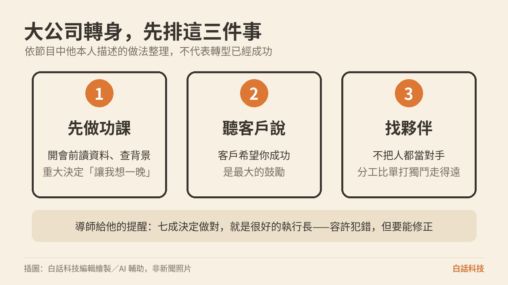

最小的孩子不用練琴，於是去養了一百多條鬥魚，還每天幫牠們排名次。幾十年後，這個人是 Intel 的執行長。路線看起來拐了很多次。把每一站對上半導體產業鏈，會發現他是在同一條鏈上往前走：先學會用數字證明一件事站得住，再去押注新創、做所有晶片設計都要用的工具，最後走進一家同時做設計與製造的公司。
閱讀說明：本文整理自 2026 年 9 月 25 日（台北時間）播出的訪談。受訪者陳立武（Lip-Bu Tan）現任 Intel 執行長，說法有他的位置與利益。Intel 轉型成敗尚未有定論。下文把「他本人的話」和「外部查得到的紀錄」分開標。英文單集名見文末來源。
節目裡，陳立武說自己在家排行最小。哥哥是心臟外科醫師，姊姊是教授。哥哥姊姊要練琴、拿獎、功課全拿高分。最小的這個，他說媽媽後來累了，就讓他做自己想做的事。鬥魚是其中一件。一百多條，每條有名字，每天排名次。這段是他的自述，用來說明他從小就在同時顧很多件小事。
轉彎發生在大學。他記得教授說過：「你很好，但你哥更好。」他不想一直被拿來跟哥哥比，於是去美國，選一條跟醫學完全不同的路。他當時認為「能源是更大的問題」（energy is a bigger problem），所以念核子工程，並自嘲這一步「早了三十年」（30 years ahead of schedule）。兩句都是他在節目裡的話。
麻省理工學院碩士期間，他說自己同時有三份收入：一份是論文指導，一份是教授因他數學還不錯而給的計畫工作，一份是新加坡的獎學金。學校出納一度問，為什麼別人一張支票、他有三張。他說自己就是在那裡學會同時處理多件事。博士沒有念完。這些是節目自述，本站未向學校查核。
外部紀錄對得上的是學歷與成長地，對不上的細節就停在他的自述。科技新報寫他在馬來西亞出生、在新加坡長大。中文名「陳立武」亦見天下雜誌與該則科技新報。Intel 2025 年 3 月 12 日新聞稿列出的學位是：新加坡南洋理工大學物理學士、麻省理工學院核子工程碩士、舊金山大學企管碩士。新聞稿學校名是 Nanyang Technological University。公開文章有時寫「南洋大學」，本文的校名跟這則新聞稿對齊。
核子工程要交的作業，核心是證明這個設計安全。安全不能只靠「我覺得沒問題」。他在節目裡說，第一份工作花了六個月做統計分析，把設計正確這件事用數字證明給人看。後來挑公司、做決定，他仍把「先把數字攤開」當成習慣。這是他自己的連結。
用數字說服人，是後面創投與經營的底子。這一頁先記住這件事。下一頁他開始拿別人的錢去押新創，看的仍是：這個人講的話，數字和背景對不對得上。

插圖：白話科技編輯繪製／AI 輔助，非新聞照片
核子工程的第一份工作之後，他說有人找他去做能源新創。同行多半五十歲上下，他二十出頭，於是被指派當財務長。他說自己當時不知道帳要怎麼平，對方就送他去舊金山大學讀夜間企管碩士，白天當財務長，晚上上課。公司後來賣掉。公司名稱與交易條件是他的自述，本站未查核。
賣掉之後他去找創投的工作。他說大約談了 12 家，沒有一家給職位。最後他提出「不用付我薪水」，只要一個位子。起步的錢來自親友與岳父，他說大約 300 萬美元。這兩筆數字都是節目裡他的說法。
外部查得到的是公司本身。華登國際（Walden International）官網寫，公司於 1987 年創立。團隊頁寫他是創辦人兼董事長，並寫他同時是 Walden Catalyst Ventures 的創始管理合夥人。Intel 新聞稿也寫他是華登國際董事長。他在節目裡說，管理規模後來做到「五、六十億美元」。這句只標示為他的說法。外部來源的數字並不一致，本站未查核。
他挑公司的順序，用他自己的話整理是這樣。先看人：誠實、聽得進話、身邊有沒有團隊。他把資訊分成「訊號與雜訊」（signal and noise）。訊號是這個人夠不夠誠實、聽不聽得進話、遇到幾乎做不下去的時候還能不能繼續，以及身邊有沒有團隊。雜訊是只反覆講自己多強、把弱點蓋住。市場要夠大，才有機會變成領先者。技術至少要有十倍的改進；他說若只是兩倍，就先不必為了它花時間。最後要找得到願意付錢的客戶。半導體投資裡，他還會看大型雲端公司是否真的需要這項技術。以上都是他在節目裡描述的方法。
創投的報酬可以想成一疊帳單。投入 1 元，失敗最多賠掉這 1 元。成功的那幾張，可能變成 10 元或 100 元。所以挑的時候，看的是有沒有機會變成那少數幾張大贏家。這段是編輯用來說明報酬結構的比喻。
他接著說，自己賠掉的公司不到一成。這句是他本人的成績單，本站未查核，也不把它當成產業平均。
這段經歷為什麼會讓他懂半導體：主持人提到，曾有一段時間幾乎沒有人投資半導體新創。他說自己後來專注半導體，是因為報酬最好。兩句都留在節目的說法裡。下一頁他走進的公司，就是這條鏈上幾乎每家設計公司都要用的那層工具。
2009 年至 2021 年，他擔任益華電腦（Cadence Design Systems）執行長；2021 年至 2023 年任執行主席；2004 年起任董事。這段任期寫在 Intel 2025 年 3 月 12 日的任命新聞稿裡。
他自己的版本是：接任時沒有當執行長的經驗，也不懂電子設計自動化軟體，於是請員工教他。全員會議上他說自己是第一次當執行長，請大家寄點子。他說每天收到數百封信，每一封都回，有些還親自去找寫信的人。人事部門先給了他入門書。這些是節目自述。
有一位導師告訴他：「如果你七成的決定是對的，你就是很好的執行長。」他說這句話讓他敢做決定，錯了可以再修。英文原話裡有一句口頭的強調，這裡只留中文意思。這是他轉述的建議，是給當時那位新執行長的標準，不是事後成績單。
Intel 新聞稿另寫，他任益華電腦執行長期間，公司營收翻倍以上，股價上漲超過 3,200%。這是 Intel 新聞稿的說法，本站未獨立驗證財務數字。本文也不用這組數字推論 Intel 的股價。
電子設計自動化軟體，可以想成建築師用的繪圖軟體。晶片很複雜，設計公司要用這套軟體把電路畫出來、把規則檢查過。畫圖的公司很多是無晶圓廠設計公司：只畫設計圖，自己不蓋工廠。晶圓代工廠照著圖把晶片做出來。真實的產業鏈還有封裝測試、設備與材料。下面這張圖只留三段，方便對上他待過的位置。

插圖：白話科技編輯繪製／AI 輔助，非新聞照片
他在節目裡對台積電創辦人張忠謀表示敬意，並說：「如果每家無晶圓廠設計公司都得自己蓋晶圓廠，誰也賺不到錢。」這句話點出晶圓代工分工的理由。工廠極貴，設計公司若每家都自建，固定成本會把利潤吃掉。代工廠把施工集中起來，設計公司付製造的費用，兩邊才有各自的生意。
他也說，Intel 目前仍是台積電的前十大客戶，而且會繼續合作。前十大這句是他本人的說法，本站未查核客戶排名。Intel 的難處放在下一頁：同一家公司既要做自己的設計，又要把晶圓代工做大到能服務外部客戶。
時間線先對外部紀錄。Intel 新聞稿寫，他於 2024 年 8 月卸下 Intel 董事，2025 年 3 月 12 日宣布任命、3 月 18 日生效出任執行長，並回到董事會。節目裡他的版本是：當董事時「知道問題卻無能為力」，信與訊息很多，睡不好，太太建議他辭去董事，否則對身體不好。辭職的月份對得上新聞稿。睡不好與家人建議是他的自述。
他說五年前曾是 Intel 執行長的最終人選之一，當時因家庭因素婉拒。後來一位朋友傳訊，大意是：以你在益華電腦的成績，Intel 對產業、對美國都很重要，「退休前，救救 Intel」（Before you retire, save Intel）。他說這句話讓他放在心上。婉拒、家庭、這則傳訊，都是他的說法。
2025 年 8 月 7 日，美國總統川普在 Truth Social 要求他立即辭職。Reuters 報導，理由是他與中國企業的關聯構成「高度利益衝突」，並報導他曾投資中國的晶片與先進製造公司。Network World 報導，8 月 11 日兩人在白宮會面後，川普的態度轉變。他在節目裡的說法是：自己投資全球，以色列、台灣、新加坡、印度、中國都有；當時很多創投都投中國，後來中國被看成競爭對手，衝突才被提出來。他說自己向總統說明在新加坡長大、並未在中國住過，並表示轉型需要兩年。會面裡的對話是他的轉述，本站未查核。兩邊的公開說法都放在這裡，本文不做判斷。
2025 年 8 月 22 日，Intel 新聞稿宣布，美國政府以 89 億美元購入 4.333 億股普通股，約 9.9% 股權，為被動持股，沒有董事席次。他在節目裡用台灣政府早期入股台積電當例子，主張政府持股晶片製造屬於基礎建設，並提到新加坡、日本也有政府持股的晶片製造。他口述了一個台灣政府的持股比例，該數字未經本站查核，本文不引用。
2025 年 9 月 18 日，Intel 新聞室寫，輝達（NVIDIA）宣布以每股 23.28 美元投資 Intel 普通股 50 億美元，並共同開發資料中心與個人電腦產品。新聞稿寫這筆投資尚待慣例成交條件。本文只記錄這則宣布，不評論價格或該不該買。
難處可以收成一句話。Intel 要同時做自己的晶片設計，又要把晶圓代工做大到能服務外部客戶，而且要追先進製程。前兩段在產業裡常常拆開：無晶圓廠設計公司不養工廠，晶圓代工廠替很多客戶施工。綁在同一家公司，設計部門與代工部門要搶同一批資源，外部客戶還會問：把圖交給你，會不會幫到你自己的產品。他在節目裡強調夥伴，點名輝達、超微、台積電，說自己不把這些公司只當成對手。對想接外部代工的生意來說，這也是一種取得信任的做法。信任有沒有換成訂單，轉型有沒有完成，本文不下結論。

插圖：白話科技編輯繪製／AI 輔助，非新聞照片
「讓我想一晚」是他的短句。他補了一句：那一晚其實是在做功課，隔天再做決定，並設法讓相關的人接受。客戶希望 Intel 成功，是他說自己現在最被鼓舞的地方，其中也包括他稱為競爭者的公司。這些句子記錄的是他的做法與感受。訂單、製程與財務進度，本文未另做查核。
1. 這是一集友好訪談。主持人 Jodi Shelton 是全球半導體聯盟（Global Semiconductor Alliance）共同創辦人暨執行長，與他相識二十多年。他曾任這個聯盟的董事，出任 Intel 執行長後再次出任。節目有贊助商。內容多為他本人回顧，沒有反方觀點。
2. 他的職涯數字，包括管理資產規模、投資虧損比例、首次公開發行家數，都是本人說法，本站未查核。
3. 中國投資爭議：Reuters 報導他曾投資中國晶片與先進製造公司，這是川普要求辭職的背景。他在節目中的說法是自己投資全球，當時很多創投都投中國。兩邊說法都呈現，不做判斷。
4. Intel 轉型尚未完成。本文不評論股價，也不提供投資建議。公司財務數字除上文已標明的新聞稿外，均未查核。主持人提到的「連續七季超越預期」「十五年來最佳成長」，是口頭說法，本文不寫進事實敘事。
5. 逐字稿為機器轉錄，引句已對照音檔時間點，但仍可能有辨識誤差。人名在機器稿裡有誤聽，本文使用外部紀錄上的名稱：華登國際、益華電腦、陳立武。
職涯的站，對得上產業鏈的段。核子工程訓練他用數字證明設計站得住。能源新創讓他兼管財務。創投讓他挑人、挑問題。益華電腦是設計工具。Intel 同時做設計與製造。
創投看四件事。人是否誠實、聽得進話、有沒有團隊；市場夠不夠大；技術有沒有十倍等級的改進；客戶願不願意付錢。投入 1 元，失敗最多賠 1 元，成功可能是 10 倍或 100 倍。管理規模「五、六十億美元」與虧損不到一成，是他的說法，未查核。
設計與製造常常拆開。電子設計自動化軟體是共用的繪圖工具。無晶圓廠設計公司畫圖。晶圓代工廠施工。他說，若每家設計公司都自己蓋晶圓廠，誰也賺不到錢。
Intel 的難處是兩段綁在一起。自己的晶片設計、服務外部客戶的晶圓代工、先進製程，要在同一家公司裡同時推進。2025 年 3 月 18 日他出任執行長。同年 8 月 22 日美國政府入股約 9.9%。9 月 18 日輝達宣布 50 億美元投資。日期與金額來自新聞稿。
這是他的回顧，加上查得到的公開紀錄。轉型尚未完成。本文不評論股價，也不提供投資建議。
以下是編輯根據本文延伸的實務建議，不是講者原話，也不是已驗證的研究結論。
把「證明設計正確」當成交付的一部分。他的第一份工作，花了六個月用統計把設計證明給人看。對到工程實作，就是為一個關鍵模組補上可重現的驗證：測試、統計、邊界條件。功能做出來而驗證補不回去，下一個人只能聽你說它是對的。
畫出自己的產品在供應鏈哪一段。列出上游工具與下游客戶，標出一個上游變動會影響你的地方。設計工具改版、代工產能變緊、客戶規格改寫，影響的位置不同。先知道自己站在哪一段，才知道該問誰。
用「十倍而不是兩倍」寫評估。提案新工具或重構時，寫出可量化的改善倍數，以及量測方法。倍數與量法都寫在提案上，別人才看得到你準備優化哪一個數。
挑一個你負責的功能，寫一頁「上游依賴 → 我 → 下游使用者」，並附一個量測指標。驗收方式：這頁圖讓一位不熟的同事在 5 分鐘內說得出你的上游與下游各一個，且指標有實際數字。說不出來，或指標還沒有數字，這一頁就還沒完成。這是初步試驗，用來檢查這張圖能不能被另一個人讀懂。
以下是編輯根據本文延伸的實務建議，不是講者原話，也不是已驗證的研究結論。範圍停在你帶得動的團隊：一頁紀錄、一次複盤、一次跨組對齊。
重大決定前先做功課，再寫下來。建立一頁式決策紀錄：背景、選項、預計何時回頭檢查。他說重大決定會先留一晚做功課。對小主管，這一頁的用處是讓兩週後的自己看得到當時知道什麼、選了什麼。
用七成當心理準備，用複盤當修正機制。導師給他的提醒是，七成決定做對，已經是很好的執行長。編輯延伸成團隊做法：每個決定約定兩週後複盤，錯了就修。七成是提醒容許犯錯，複盤是把修正排進行事曆。
把相鄰團隊當夥伴。列出一個常被看成在搶資源的團隊，約一次共同目標對齊。問的是兩邊這一季要一起交成什麼，誰先做哪一段。對齊停在兩個團隊的目標與分工。
挑一個卡住的決定，用一頁式決策紀錄寫下背景、選項與回頭檢查的日子，並排好兩週後的複盤會議。驗收方式：兩週後的複盤會議真的有開，且紀錄上寫明「維持」或「調整」的結論與理由。會議沒開，或紀錄沒有結論，這個試驗就還沒完成。
Intel 同時做設計與製造，難處已經寫在產業鏈的結構裡。轉型成敗尚未有定論。
A. 來自節目（他本人的說法）。家庭背景、教授拿他與哥哥比較、選擇核子工程的原因、自嘲早了三十年、麻省理工學院期間三份收入、博士沒有念完、第一份工作以六個月統計分析證明設計、能源新創與財務長經歷、夜間企管碩士、大約 12 家創投沒有給職位、約 300 萬美元起步、管理規模五至六十億美元、挑公司時看人與「訊號與雜訊」、十倍與兩倍的標準、願意付錢的客戶、虧損比例不到一成、後來因報酬而專注半導體、益華電腦的學習過程與每封信都回、導師關於七成決定的建議、五年前婉拒 Intel、朋友傳訊「退休前，救救 Intel」、董事期間睡不好並依家人建議辭任、與總統會面的轉述、兩年轉型的說法、台灣政府早期入股台積電被他當成基礎建設的例子、Intel 仍是台積電前十大客戶、客戶希望公司成功是他的鼓勵。節目：A Bit Personal（Substack：A Bit Personal Podcast）。主持人：Jodi Shelton。單集：〈Lip-Bu Tan: From Nuclear Engineer to Intel's CEO〉，2026 年 9 月 25 日台北時間刊出（Substack 標示 2026-09-24 UTC）。單集頁面。
B. 外部查核。
Intel 新聞稿（2025-03-12）任命、學歷、益華電腦任期、2024 年 8 月辭董事，以及任內營收與股價的新聞稿說法：Intel Appoints Lip-Bu Tan as Chief Executive Officer。
華登國際 1987 年創立，他為創辦人兼董事長：waldenintl.com.sg、團隊頁。
Reuters：川普於 2025-08-07 要求辭職：川普要求 Intel 執行長因中國關聯辭職。
Network World：2025-08-11 白宮會面：川普在要求辭職後與 Intel 執行長會面。
Intel 新聞稿（2025-08-22）美國政府 89 億美元、4.333 億股、約 9.9%、被動持股、無董事席次：Intel and Trump Administration Reach Historic Agreement。
Intel 新聞室（2025-09-18）輝達宣布以每股 23.28 美元投資 50 億美元，並共同開發資料中心與個人電腦產品：Intel and NVIDIA to Jointly Develop AI Infrastructure and Personal Computing Products。
中文名「陳立武」、馬來西亞出生與新加坡長大：天下雜誌、科技新報。天下雜誌連結用於中文名；出生地與成長地依科技新報該文。
主持人 Jodi Shelton 為全球半導體聯盟共同創辦人暨執行長：KPMG：A Bit Personal podcast hosted by Jodi Shelton。
C. 未查核。除上述新聞稿中的數字外，本文未查核任何公司財務數字。節目中的管理資產規模、虧損比例、首次公開發行家數、七季超越預期、十五年來最佳成長，均為口頭說法。益華電腦營收翻倍與股價超過 3,200% 只出現在 Intel 新聞稿，本站未另做財務查核。查核日期 2026 年 9 月 29 日。
內容整理、摘要並改寫自 A Bit Personal 單集，主持人 Jodi Shelton、受訪者陳立武，非逐字紀錄。英文單集名見上方來源。文末兩則 Takeaway 是編輯依本文延伸的實務建議。